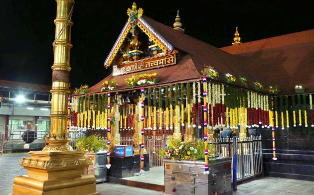

Gavi

Gavi is a village in Pathanamthitta district , Kerala, India. It is located 28 km southwest of Vandiperiyar, a town in Idukki on N.H 220, the highway connecting Kollam and Madurai.
Spread across the beauty of Periyar Tiger Reserve, Gavi is a quiet, beautiful and pristine forest haven. It is at the eastern extreme of the Pathanamthitta District at 3400 ft above MSL. These evergreen forests are abundant with magnificent Wildlife including the tiger, elephants, leopards, bears, Indian gaur, sambar, barking & Mouse deers, lion tailed macaque, other varieties of Kumarakom-bird Sanctuarymonkeys, Nilgiri Marten and a lot more.
Gavi, located in Pathanamthitta district offers its visitors activities like trekking, wildlife watching, outdoor camping in specially built tents, and night safaris. Distance from Pathanamthitta To Gavi is 109 km 428 mtrs & Travel Time is 2 hour 5 mins By Road. Both day and night stays are available. Forest tent camping is available from November through March.
How to Get Here
Nearby airports are Cochin airport (COK) and Trivandrumnm (TRV) Airport. 133 Kms from Chengannur Railway Staion.28 Kms from Vandiperiyar ( a town on NH- 212) 51 Kms from Thekkady. 109 km from Pathanamthitta District Head quarter KSRTC Bus is running an Ordinary bus service from Pathanamthitta To Kumaly Via the hilly forest tracts of Moozhiyar, Kochu-Pampa, Pachakkanam and Gavi.
Jungle Safari, Konni

A hill town, Konni is famous for timber trade and wild elephant training centre. This is a charming town with lush meadows and hills stands on the bank of river Achakovil. It is surrounded by clove and pepper plantations. Elephants trapped from the forest area are also tamed here. Konni with a vast expanse of lush green forests is the eco-tourism hub of Pathanamthitta district, which has a project with elephants at its nerve centre. An elephant kraal (shelter), a photo gallery, modern elephant shelters, an elephant museum, shops to sell forest produce, a children’s park, a biogas plant and a paper-making unit are part of the project, offering vivid experiences to the visitors
A picturesque forest patch, 10 km from Konni on the banks of river Kallar, Adavi has nearly 5-km river frontage. The Adavi Eco-tourism project jointly launched by the departments of Forest and Tourism is part of the third phase of Konni Eco tourism project and is just five km from Mundommoozhy on the proposed Achencoil-Chittar hill highway.
How to Get Here
By road, Konni is about 10 kms from Pathanamthitta, the District headquarters. Nearest railway station is Chengannur, about 35 kms. Nearest airport is Thiruvananthapuram International Airport, about 110 kms. Cochin International Airport, about 165 kms.
Perunthenaruvi Water falls

A natural fall, down a rocky path into a ravine about 100 feet deep is the Perunthenaruvi Waterfalls. It is during monsoons that one can truly appreciate the roaring waters of Perunthenaruvi falls. The name of the place translates to ‘great honey stream’ and it has turned into a famous picnic spot in Pathanamthitta district.
You can either choose a 5-minute walk or a 20-minute trek through the tea plantations to reach the waterfalls here. The music of the cascades welcomes you even from afar. The hike leads you to a luxuriant waterfall with a luscious swimming hole that tempts one to leap into its deep waters. The stream gushes further beyond through the rocky bed to unite with the holy Pamba. The river Pamba is attributed with divine grace because of its connection with Kerala’s largest pilgrim center Sabarimala.
How to Get Here
Distance from the nearest railway station – Thiruvalla is about 44 km. The nearest town Ranni is 12 Kilometers away and and the nearest airport is Trivandrum International Airport, about 138 km.
Sabarimala
Sabarimala is situated 72 km from Pathanamthitta town, 191 km from Thiruvananthapuram and 210 km from Kochi. It is the ‘Sacred Abode of Lord Ayyappa’ and one of the most important Hindu pilgrim centre in the country.The traditional route to Sabarimala is from Erumeli (40 km.). Other routes are from Vandiperiyar, Uppupara and Chalakkayam via Plappally. These routes are famous for these scenic splendour and mythological value. Sabarimala The holy shrine is located amidst dense forests in the rugged terrains of Western Ghats. Inhabited by various wildlife species. Millions of pilgrims from all over the Country assemble here during the most arduous festivals called as ‘Vishu Vilakku’ in April, ‘Mandalapooja’, in the months of Vrichikam Dhanu (Nov. – Dec) and ‘Makaravilakku’ in mid January, coinciding with Sankramam.
How to Get Here
Cochin is the nearest airport at 104 km away.Road KSRTC run Sabrimala special buses ply from the arrival gate every 2 minutes up to a certain point of the mountain, after which people have have to trek up by foot. The nearest railway station is at either Thiruvalla or Chenganoor, both about 30 km from the foot hill.